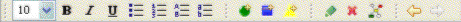

The application's action buttons are arranged below the application's menu bar.

The application's action buttons
There is a section containing a combo to resize the text in the inspector view and seven style buttons to format the text in the text field. These buttons are active only when the inspector view has the focus.
A second section contains the three buttons to start the wizard for creating a new item: a New Term, New Text and New Person action button. These buttons are always enabled.
The next section consists of the action buttons for searching, editing, deleting and relating items. These three buttons are enabled only when an item is active.
The last section displays the arrows to navigate back and forth the history. These buttons' enablement depends on your previous actions. After you've started up the application, both buttons are disabled. If you replace the item in the Relations browser's center by another item, the back arrow button is enabled. Hence you can go back to the first item display by clicking on this button. If you do so, you enable the forward button.
Tip: You can rearrange the order of action button sections in the toolbar. To do so, click on the section's handle and drag the section to the desired place in the toolbar.